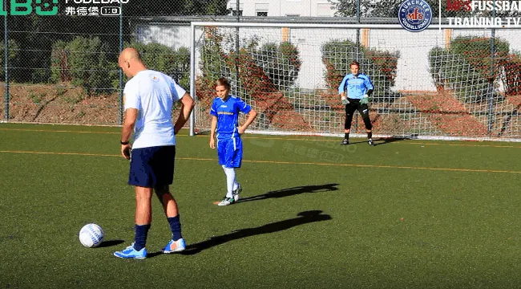
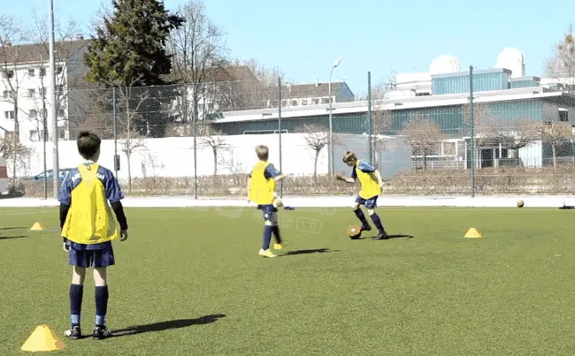
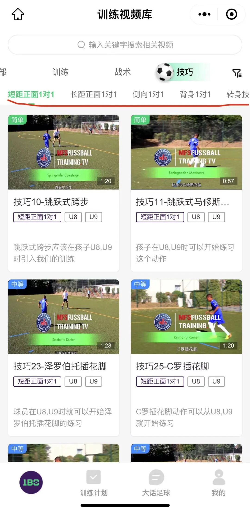
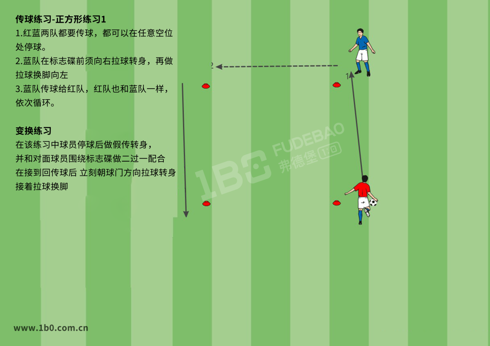
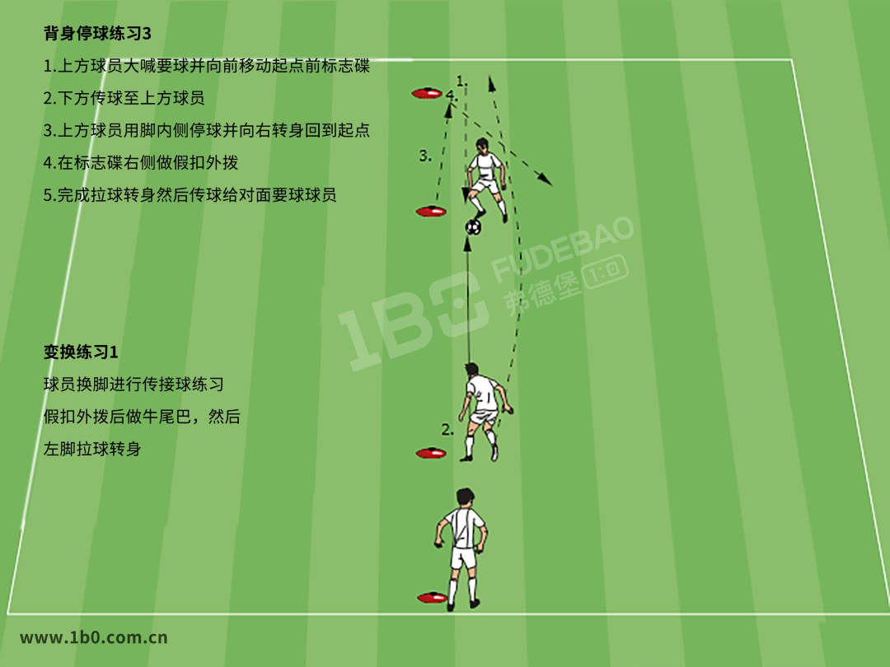
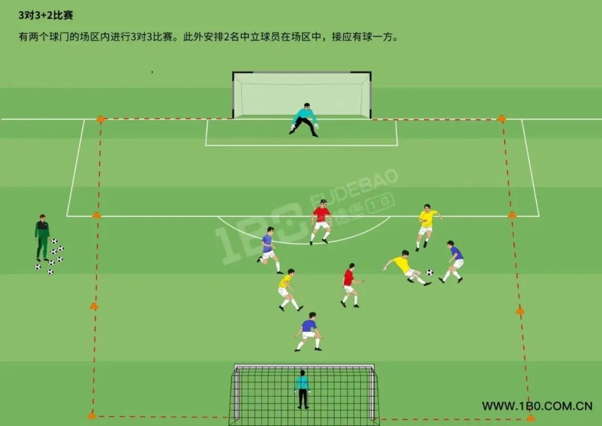
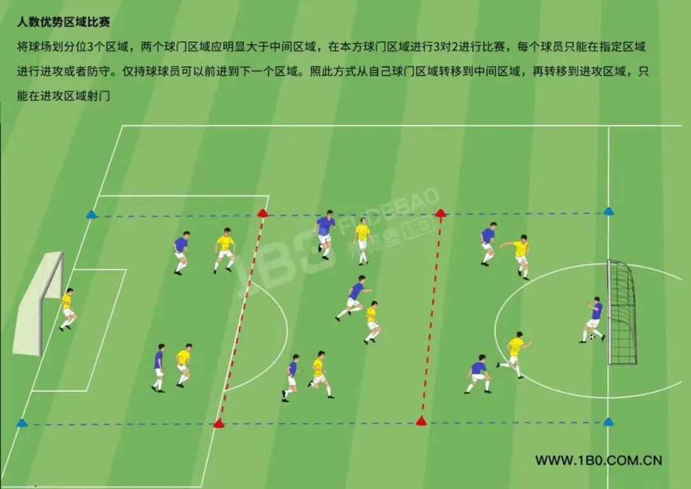

现代足球即是“空间的博弈”，米歇尔斯那句著名的“进攻时要让空间变大，防守时要让空间变小”已经成为现代足球战术的基底。
培养孩子观察决策的能力，观察的主要目标其实就是球、队友、对手、空间四者，观察是决策的前提，因此对球场空间的理解某种程度上决定了一个球员的上限。
那么，如何帮助孩子更好的理解球场空间的概念呢？我们当然还是要从日常训练入手。

几何上的空间是由点、线、面三者构成的，球场上空间亦可如此理解，我们来看看如何通过点线面三个维度，帮助孩子理解球场空间。
#
点：自身周边的空间
球场上，每一个球员可以认为是一个点，孩子们训练伊始，首先要理解的是自身（持球者）周边的空间。而对于持球者周边空间的理解，我们可以将其融入到动作技巧的练习中。

我们所强调的，动作技巧的练习中，一定不能只是单纯练习技巧，训练中一定要在孩子们使用技巧后安排下一步，可以是传球也可以是射门。如上图。
这么做的目的在于，让孩子明白不是为了做动作技巧而做动作技巧，动作技巧的目的是为了调整身体朝向获得更多出球或是摆脱的空间。
人体的结构决定我们身体朝向固定的情况下，出球角度是受限制的，即便考虑上非惯用脚和外脚背的因素，持球队员的出球角度也就是面前的135°左右。
对手的防守总是会想方设法卡在我们的最佳角度上，利用动作技巧调整身体朝向、迷惑对手，可以让对手覆盖不到我们面前的最佳出球角度，即持球方可获得空间。

利用动作技巧“假传转身”，调整身体朝向，晃过对手防守球员，获得射门空间
最开始练习中，我们可以用标志碟做参照物，让孩子们用动作技巧过标志碟。
之后随着孩子技术能力的提升，可以引入被动对手，让孩子更好的把握距离。

之后再进行真正的1v1练习。
如此循序渐进下来，我们的训练目标是：
在任何1对1场景下，球员都能选用合适的动作技巧调整身体朝向，用远离对手的脚完成出球或者射门。
这样，无需枯燥的理论课讲解，球员在提升技术能力的同时，自然就能建立起对自身控制区域和出球空间的理解。
我们按照与对手所处位置、以及持球者的奔跑状态，对1v1场景和所需要的动作技巧分为几个大类

大家可以通过微信小程序轻松选用适合的动作技巧，文章下方即有小程序入口
#
线：空位的理解与传球线路选择
两点连成一线，球场上的两个点怎么实现连结呢？当然是通过传球，传球线路就是球场空间中的线。
我们在设计相关训练时，不仅要训练孩子传接球的基本功，更要让孩子掌握选择传球线路的能力。这其中的关键就是对于“空位”的理解。

如上图所示的简单传球练习的结构中，要让孩子们把标志碟当做是对手，传球线路一定要选择标志碟的间隙，也就是“空位”。利用类似的训练结构，向孩子们传达，无球队员不能等在原地接球，要无球跑位至空位处，给持球队员创造出球空间。
同样的，在孩子们能流畅的完成基本传递之后，我们要加入停球转身技巧的练习：

借由停球转身技巧的练习，让孩子明白球场空间形式是动态变化的，无球时要寻找空位，接球前要观察周边情况，要反向虚晃欺骗对手为自己赢得接球做动作的空间，接球时要判断队友位置，利用停球转身技巧迅速调整身体朝向，与另一名队友迅速建立连线。
更复杂一些的传球练习：
#
面：控制区域与整体推进
当孩子们建立了点和线的概念后，接下来要对比赛中出现的场景中，分离出面以及空间的概念并加以理解。
当几名球员在某一区域，互相之间有几条传球线路，对手难以第一时间切断全部的“线”，如此构成三角形或是菱形区域可以称为有球方的有效控制区域，也就是球场上的“面”。
我们可以从最基本的“面”开始练习，即最简单的3v1或者4v2抢圈练习。
一开始可以将区域画的大一些，降低控球方难度。
抢圈练习的指导一定要做到位，教练需要不断提醒孩子：
- 控球的同时观察对手队友站位
- 利用动作技巧调整身体朝向打开传球线路
- 无球跑动至空位策应队友
更多指导要点，详见
这种练习形式是对球场空间利用的基础，对应了比赛中小范围控球的场景，更是一切足球战术的基础。
抢圈练习，即可以看做是一个外侧球员构成的控制区域。
但在比赛中，我们仅仅在某一区域将球控住还是不够的，孩子们还需要学会利用团队力量，推进自己的控制区域，让整体阵型更靠近对方球门。
为此我们需要更加贴合比赛场景的小场地比赛设计：

通过中立球员的引入，降低控球方难度，球门则是目标与方向，让孩子们控球的同时完成推进

模拟比赛中的整体控制+推进
比赛中，攻方的战术即是不断的构筑三角或是菱形的控制区域，不断的将控制区域和整体阵型前推。
更多贴合比赛场景的小比赛设计，可以在我们公众号菜单->训练视频库->“游戏比赛”分类中找到。
#
总结
如此，在孩子基本功与技术训练的过程中，通过上述的训练设计，我们不必再用枯燥无聊的理论课，孩子即能从“点”、“线”、“面”三个方面，对球场空间和足球配合战术有基本的理解。
后续再进行战术训练，理解阵型战术，对孩子们来说就是水到渠成了。
当然，12岁之前以技术和协调训练为主，重点仍然要放在技术能力的提升上面，还是那个原因，过了12岁神经系统发育的窗口期之后，球员的技术就很难有质的提升了。
文字与图片版权归各自权利人所有；排版根据抓取内容整理。